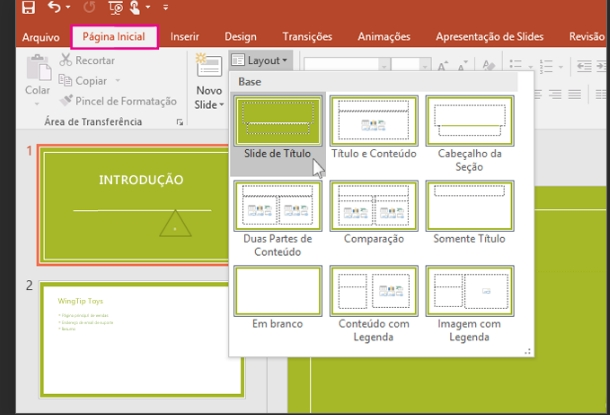

Bem vindo a pagina do tutoruial do POWERPOINT
1.Escolher um Modelo ou Layout
Quando o PowerPoint abrir, você será apresentado a uma tela inicial com
modelos e layouts pré-fabricados. Escolha um modelo que se adapte ao seu
projeto ou clique em "Em branco" para começar do zero.

2.Adicionar Slides
Para adicionar um novo slide, vá para a guia "Inserir" no topo da tela e
clique em "Novo Slide". Você pode escolher entre diferentes layouts de
slide, como título, título e conteúdo, apenas conteúdo, etc.
 3. Adicionar Conteúdo
No slide, você pode adicionar texto, imagens, gráficos, vídeos e muito
mais. Basta clicar no espaço designado no slide e começar a digitar ou
inserir mídia.
3. Adicionar Conteúdo
No slide, você pode adicionar texto, imagens, gráficos, vídeos e muito
mais. Basta clicar no espaço designado no slide e começar a digitar ou
inserir mídia.
/i.s3.glbimg.com/v1/AUTH_08fbf48bc0524877943fe86e43087e7a/internal_photos/bs/2019/r/i/NY9fuyTciLFdU3mTiSRg/passo-1.jpg) 4.Formatar e Estilizar
Use as guias na parte superior da tela, como "Início" e "Design", para
formatar seu texto, adicionar efeitos de design, alterar cores e fontes,
entre outras opções de estilização.
4.Formatar e Estilizar
Use as guias na parte superior da tela, como "Início" e "Design", para
formatar seu texto, adicionar efeitos de design, alterar cores e fontes,
entre outras opções de estilização.
 5.Adicionar Animações e Transições (Opcional)
Se desejar, você pode adicionar animações aos elementos individuais do
slide ou aplicar transições entre os slides. Isso pode ser feito através
da guia "Animações" e "Transições".
5.Adicionar Animações e Transições (Opcional)
Se desejar, você pode adicionar animações aos elementos individuais do
slide ou aplicar transições entre os slides. Isso pode ser feito através
da guia "Animações" e "Transições".
/i.s3.glbimg.com/v1/AUTH_08fbf48bc0524877943fe86e43087e7a/internal_photos/bs/2018/N/C/vrt96wSQGda6hWetobKw/passo-1.jpg) 6.Revisar e Editar
Após criar seu conteúdo, revise seu trabalho para garantir que tudo
esteja correto e bem apresentado. Faça edições conforme necessário.
6.Revisar e Editar
Após criar seu conteúdo, revise seu trabalho para garantir que tudo
esteja correto e bem apresentado. Faça edições conforme necessário.
 7. Salvar e Compartilhar
Quando estiver satisfeito com sua apresentação, salve seu trabalho
clicando em "Arquivo" > "Salvar Como" e escolha o local e o formato de
arquivo desejado. Você também pode optar por compartilhar diretamente a
apresentação clicando em "Arquivo" > "Compartilhar".
7. Salvar e Compartilhar
Quando estiver satisfeito com sua apresentação, salve seu trabalho
clicando em "Arquivo" > "Salvar Como" e escolha o local e o formato de
arquivo desejado. Você também pode optar por compartilhar diretamente a
apresentação clicando em "Arquivo" > "Compartilhar".
 8. Apresentar
Para apresentar sua criação, basta clicar em "Apresentação de Slides" na
parte superior da tela ou pressionar F5 no teclado para iniciar a
apresentação do primeiro slide.
8. Apresentar
Para apresentar sua criação, basta clicar em "Apresentação de Slides" na
parte superior da tela ou pressionar F5 no teclado para iniciar a
apresentação do primeiro slide.